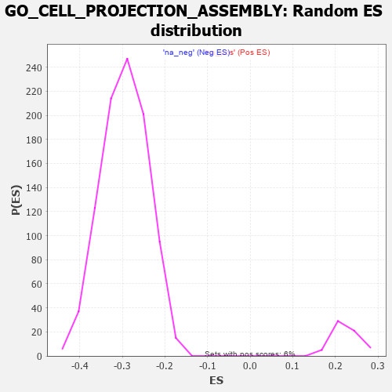

| | | Dataset | 7d |
| Phenotype | NoPhenotypeAvailable |
| Upregulated in class | na_neg |
| GeneSet | GO_CELL_PROJECTION_ASSEMBLY |
| Enrichment Score (ES) | -0.52023214 |
| Normalized Enrichment Score (NES) | -1.7641777 |
| Nominal p-value | 0.0 |
| FDR q-value | 0.021299304 |
| FWER p-Value | 0.653 |
Table: GSEA Results Summary
Fig 1: Enrichment plot: GO_CELL_PROJECTION_ASSEMBLY
Profile of the Running ES Score & Positions of GeneSet Members on the Rank Ordered List
| PROBE | GENE SYMBOL | GENE_TITLE | RANK IN GENE LIST | RANK METRIC SCORE | RUNNING ES | CORE ENRICHMENT | | 1 | TGFB3 | | | 49 | 2.654 | 0.0174 | No |
| 2 | RAC2 | | | 60 | 2.442 | 0.0379 | No |
| 3 | RHOU | | | 210 | 1.031 | 0.0280 | No |
| 4 | RHOH | | | 228 | 0.987 | 0.0347 | No |
| 5 | FSCN1 | | | 297 | 0.830 | 0.0334 | No |
| 6 | NUP85 | | | 329 | 0.772 | 0.0363 | No |
| 7 | TAPT1 | | | 354 | 0.743 | 0.0399 | No |
| 8 | PLD1 | | | 381 | 0.716 | 0.0429 | No |
| 9 | OCRL | | | 408 | 0.691 | 0.0457 | No |
| 10 | SRF | | | 542 | 0.615 | 0.0342 | No |
| 11 | TTC36 | | | 687 | 0.563 | 0.0208 | No |
| 12 | CDK10 | | | 1092 | 0.465 | -0.0269 | No |
| 13 | SRC | | | 1128 | 0.459 | -0.0273 | No |
| 14 | NCK2 | | | 1131 | 0.458 | -0.0234 | No |
| 15 | MTSS1 | | | 1149 | 0.454 | -0.0216 | No |
| 16 | RFX3 | | | 1171 | 0.451 | -0.0202 | No |
| 17 | NEDD1 | | | 1186 | 0.449 | -0.0180 | No |
| 18 | STK36 | | | 1193 | 0.448 | -0.0148 | No |
| 19 | E2F4 | | | 1501 | 0.390 | -0.0506 | No |
| 20 | TNPO1 | | | 1684 | 0.359 | -0.0708 | No |
| 21 | FMR1 | | | 1816 | 0.334 | -0.0846 | No |
| 22 | ANO6 | | | 2339 | 0.255 | -0.1492 | No |
| 23 | BCAS3 | | | 2352 | 0.253 | -0.1485 | No |
| 24 | VAV3 | | | 2614 | 0.210 | -0.1801 | No |
| 25 | SLIT2 | | | 2724 | 0.195 | -0.1923 | No |
| 26 | DCTN3 | | | 2731 | 0.193 | -0.1913 | No |
| 27 | TTLL1 | | | 2764 | 0.189 | -0.1937 | No |
| 28 | FER | | | 2803 | 0.183 | -0.1970 | No |
| 29 | BRK1 | | | 2805 | 0.183 | -0.1955 | No |
| 30 | RAB17 | | | 2950 | 0.157 | -0.2125 | No |
| 31 | TWF1 | | | 3199 | 0.123 | -0.2432 | No |
| 32 | RAB8A | | | 3319 | 0.102 | -0.2576 | No |
| 33 | RFX4 | | | 3334 | 0.099 | -0.2585 | No |
| 34 | ATG3 | | | 3471 | 0.081 | -0.2752 | No |
| 35 | EXOC5 | | | 3574 | 0.064 | -0.2877 | No |
| 36 | CEP19 | | | 3778 | 0.031 | -0.3134 | No |
| 37 | SFI1 | | | 3810 | 0.026 | -0.3172 | No |
| 38 | NEK2 | | | 3871 | 0.016 | -0.3247 | No |
| 39 | ATG5 | | | 4051 | -0.016 | -0.3475 | No |
| 40 | MTOR | | | 4114 | -0.025 | -0.3552 | No |
| 41 | ABL1 | | | 4125 | -0.027 | -0.3563 | No |
| 42 | PLCE1 | | | 4127 | -0.028 | -0.3562 | No |
| 43 | BBIP1 | | | 4226 | -0.046 | -0.3683 | No |
| 44 | ARPC2 | | | 4232 | -0.047 | -0.3685 | No |
| 45 | WDR11 | | | 4262 | -0.052 | -0.3718 | No |
| 46 | BAG4 | | | 4314 | -0.061 | -0.3778 | No |
| 47 | RALA | | | 4416 | -0.079 | -0.3900 | No |
| 48 | KIF3B | | | 4450 | -0.085 | -0.3935 | No |
| 49 | SPAG1 | | | 4453 | -0.085 | -0.3930 | No |
| 50 | EPS8 | | | 4474 | -0.088 | -0.3948 | No |
| 51 | APC | | | 4558 | -0.107 | -0.4044 | No |
| 52 | MYLK | | | 4651 | -0.128 | -0.4151 | No |
| 53 | ARF6 | | | 4704 | -0.140 | -0.4205 | No |
| 54 | DCX | | | 4721 | -0.143 | -0.4213 | No |
| 55 | WASF3 | | | 4730 | -0.145 | -0.4210 | No |
| 56 | POC1A | | | 4768 | -0.151 | -0.4244 | No |
| 57 | TNIK | | | 4804 | -0.158 | -0.4275 | No |
| 58 | CEP97 | | | 4812 | -0.160 | -0.4269 | No |
| 59 | BIN3 | | | 4832 | -0.165 | -0.4279 | No |
| 60 | IFT43 | | | 4907 | -0.179 | -0.4358 | No |
| 61 | CAPZB | | | 4908 | -0.179 | -0.4342 | No |
| 62 | ARAP1 | | | 4963 | -0.191 | -0.4394 | No |
| 63 | DCTN2 | | | 5175 | -0.243 | -0.4643 | No |
| 64 | HDAC6 | | | 5183 | -0.244 | -0.4630 | No |
| 65 | PARVA | | | 5187 | -0.245 | -0.4612 | No |
| 66 | CDK1 | | | 5264 | -0.262 | -0.4686 | No |
| 67 | CEP70 | | | 5282 | -0.267 | -0.4684 | No |
| 68 | PLK4 | | | 5397 | -0.295 | -0.4804 | No |
| 69 | KIF3A | | | 5480 | -0.313 | -0.4881 | No |
| 70 | CEP76 | | | 5485 | -0.315 | -0.4858 | No |
| 71 | EHD1 | | | 5560 | -0.336 | -0.4923 | No |
| 72 | NDE1 | | | 5578 | -0.339 | -0.4914 | No |
| 73 | TTBK2 | | | 5700 | -0.376 | -0.5036 | No |
| 74 | IFT46 | | | 5802 | -0.406 | -0.5129 | No |
| 75 | BBS4 | | | 5806 | -0.407 | -0.5096 | No |
| 76 | ARL6 | | | 5847 | -0.417 | -0.5110 | No |
| 77 | BBS5 | | | 5862 | -0.421 | -0.5091 | No |
| 78 | DCTN1 | | | 5950 | -0.454 | -0.5162 | Yes |
| 79 | ACTN2 | | | 5960 | -0.458 | -0.5132 | Yes |
| 80 | CNTRL | | | 5961 | -0.459 | -0.5091 | Yes |
| 81 | B9D1 | | | 5962 | -0.459 | -0.5050 | Yes |
| 82 | SH2B1 | | | 5963 | -0.459 | -0.5009 | Yes |
| 83 | CENPJ | | | 5968 | -0.460 | -0.4973 | Yes |
| 84 | CKAP5 | | | 6032 | -0.482 | -0.5011 | Yes |
| 85 | RAC1 | | | 6036 | -0.484 | -0.4972 | Yes |
| 86 | EVL | | | 6052 | -0.490 | -0.4947 | Yes |
| 87 | HYLS1 | | | 6067 | -0.495 | -0.4921 | Yes |
| 88 | PLK1 | | | 6082 | -0.500 | -0.4894 | Yes |
| 89 | DBNL | | | 6084 | -0.501 | -0.4851 | Yes |
| 90 | IFT80 | | | 6135 | -0.515 | -0.4869 | Yes |
| 91 | ROCK1 | | | 6152 | -0.520 | -0.4843 | Yes |
| 92 | PARVB | | | 6168 | -0.528 | -0.4815 | Yes |
| 93 | B9D2 | | | 6196 | -0.535 | -0.4802 | Yes |
| 94 | EHD4 | | | 6227 | -0.545 | -0.4792 | Yes |
| 95 | CDC42 | | | 6236 | -0.548 | -0.4753 | Yes |
| 96 | DRC1 | | | 6278 | -0.565 | -0.4755 | Yes |
| 97 | IFT52 | | | 6280 | -0.566 | -0.4706 | Yes |
| 98 | IFT57 | | | 6307 | -0.579 | -0.4688 | Yes |
| 99 | MIEN1 | | | 6316 | -0.582 | -0.4646 | Yes |
| 100 | IFT88 | | | 6335 | -0.590 | -0.4616 | Yes |
| 101 | IFT27 | | | 6348 | -0.596 | -0.4578 | Yes |
| 102 | ARMC2 | | | 6363 | -0.602 | -0.4543 | Yes |
| 103 | BBS2 | | | 6383 | -0.608 | -0.4513 | Yes |
| 104 | CDKL1 | | | 6388 | -0.610 | -0.4463 | Yes |
| 105 | BBS1 | | | 6397 | -0.616 | -0.4419 | Yes |
| 106 | IFT22 | | | 6400 | -0.617 | -0.4366 | Yes |
| 107 | NEK1 | | | 6402 | -0.618 | -0.4312 | Yes |
| 108 | CEP41 | | | 6516 | -0.669 | -0.4397 | Yes |
| 109 | KANK1 | | | 6536 | -0.678 | -0.4361 | Yes |
| 110 | RPGR | | | 6579 | -0.699 | -0.4352 | Yes |
| 111 | ALMS1 | | | 6590 | -0.704 | -0.4302 | Yes |
| 112 | MKS1 | | | 6607 | -0.715 | -0.4259 | Yes |
| 113 | WWTR1 | | | 6631 | -0.729 | -0.4223 | Yes |
| 114 | RAB5A | | | 6655 | -0.741 | -0.4187 | Yes |
| 115 | TTC8 | | | 6682 | -0.753 | -0.4153 | Yes |
| 116 | OFD1 | | | 6692 | -0.758 | -0.4097 | Yes |
| 117 | KIF27 | | | 6750 | -0.786 | -0.4100 | Yes |
| 118 | C2CD3 | | | 6783 | -0.802 | -0.4069 | Yes |
| 119 | WDR19 | | | 6796 | -0.812 | -0.4012 | Yes |
| 120 | CEP72 | | | 6846 | -0.839 | -0.4000 | Yes |
| 121 | TTLL3 | | | 6857 | -0.845 | -0.3937 | Yes |
| 122 | AHI1 | | | 6860 | -0.848 | -0.3864 | Yes |
| 123 | NINL | | | 6869 | -0.851 | -0.3798 | Yes |
| 124 | ARMC9 | | | 6875 | -0.852 | -0.3729 | Yes |
| 125 | IQCB1 | | | 6882 | -0.856 | -0.3660 | Yes |
| 126 | ESPN | | | 6911 | -0.873 | -0.3618 | Yes |
| 127 | CSPG4 | | | 6918 | -0.878 | -0.3547 | Yes |
| 128 | NPHP4 | | | 6991 | -0.931 | -0.3556 | Yes |
| 129 | DZIP1 | | | 7009 | -0.940 | -0.3494 | Yes |
| 130 | CEP83 | | | 7020 | -0.950 | -0.3422 | Yes |
| 131 | ARL3 | | | 7041 | -0.963 | -0.3362 | Yes |
| 132 | MYH10 | | | 7048 | -0.966 | -0.3283 | Yes |
| 133 | PIBF1 | | | 7049 | -0.966 | -0.3197 | Yes |
| 134 | BBS7 | | | 7089 | -0.988 | -0.3159 | Yes |
| 135 | TTC25 | | | 7094 | -0.992 | -0.3075 | Yes |
| 136 | WDR60 | | | 7153 | -1.038 | -0.3057 | Yes |
| 137 | HYDIN | | | 7173 | -1.049 | -0.2987 | Yes |
| 138 | TEKT2 | | | 7177 | -1.053 | -0.2897 | Yes |
| 139 | CETN2 | | | 7200 | -1.070 | -0.2830 | Yes |
| 140 | IFT74 | | | 7211 | -1.085 | -0.2746 | Yes |
| 141 | TCHP | | | 7224 | -1.099 | -0.2663 | Yes |
| 142 | LRGUK | | | 7229 | -1.101 | -0.2570 | Yes |
| 143 | RSPH1 | | | 7231 | -1.101 | -0.2473 | Yes |
| 144 | WDR34 | | | 7233 | -1.103 | -0.2376 | Yes |
| 145 | FBF1 | | | 7241 | -1.111 | -0.2286 | Yes |
| 146 | RSPH9 | | | 7265 | -1.137 | -0.2213 | Yes |
| 147 | IFT81 | | | 7277 | -1.151 | -0.2125 | Yes |
| 148 | KIF17 | | | 7291 | -1.160 | -0.2038 | Yes |
| 149 | ARMC4 | | | 7311 | -1.181 | -0.1957 | Yes |
| 150 | CYLD | | | 7333 | -1.206 | -0.1876 | Yes |
| 151 | TEKT1 | | | 7349 | -1.220 | -0.1786 | Yes |
| 152 | CEP89 | | | 7354 | -1.223 | -0.1682 | Yes |
| 153 | WDR35 | | | 7357 | -1.225 | -0.1576 | Yes |
| 154 | WDR78 | | | 7396 | -1.261 | -0.1512 | Yes |
| 155 | WDR63 | | | 7411 | -1.276 | -0.1416 | Yes |
| 156 | SPEF2 | | | 7418 | -1.289 | -0.1308 | Yes |
| 157 | KLF5 | | | 7429 | -1.304 | -0.1205 | Yes |
| 158 | CEP78 | | | 7464 | -1.354 | -0.1127 | Yes |
| 159 | BBOF1 | | | 7507 | -1.401 | -0.1056 | Yes |
| 160 | TEKT4 | | | 7539 | -1.455 | -0.0966 | Yes |
| 161 | GAS8 | | | 7540 | -1.455 | -0.0836 | Yes |
| 162 | IQCG | | | 7541 | -1.455 | -0.0706 | Yes |
| 163 | SAXO1 | | | 7592 | -1.543 | -0.0632 | Yes |
| 164 | CROCC | | | 7639 | -1.628 | -0.0546 | Yes |
| 165 | MNS1 | | | 7642 | -1.633 | -0.0403 | Yes |
| 166 | IQUB | | | 7653 | -1.653 | -0.0268 | Yes |
| 167 | TEKT3 | | | 7658 | -1.657 | -0.0125 | Yes |
| 168 | TRPM2 | | | 7680 | -1.712 | 0.0001 | Yes |
| 169 | NPHP1 | | | 7791 | -2.041 | 0.0042 | Yes |
| 170 | DCDC2 | | | 7813 | -2.099 | 0.0203 | Yes |
Table: GSEA details [plain text format]

Fig 2: GO_CELL_PROJECTION_ASSEMBLY: Random ES distribution
Gene set null distribution of ES for GO_CELL_PROJECTION_ASSEMBLY